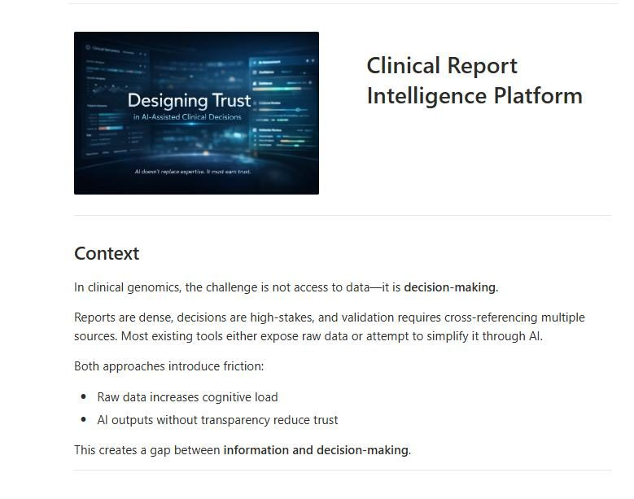
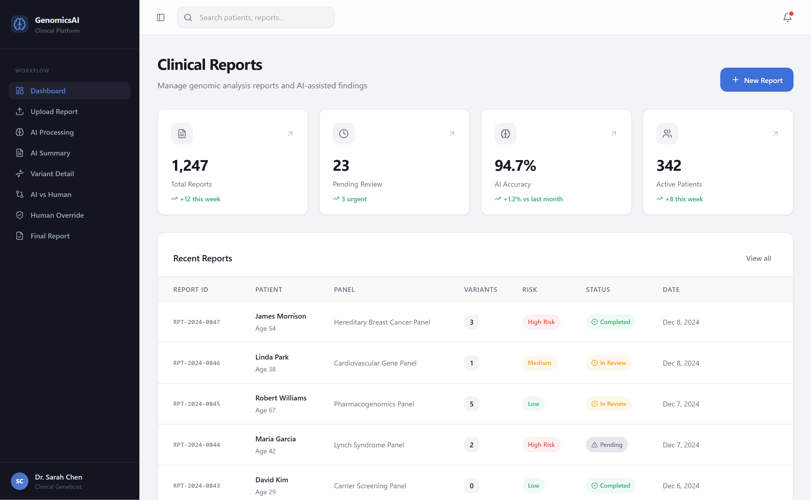
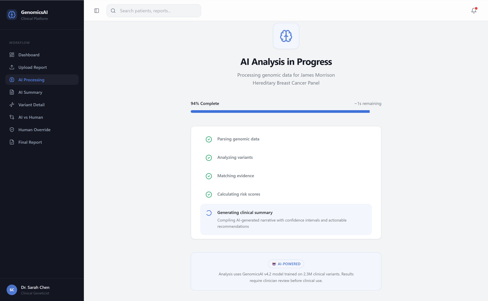
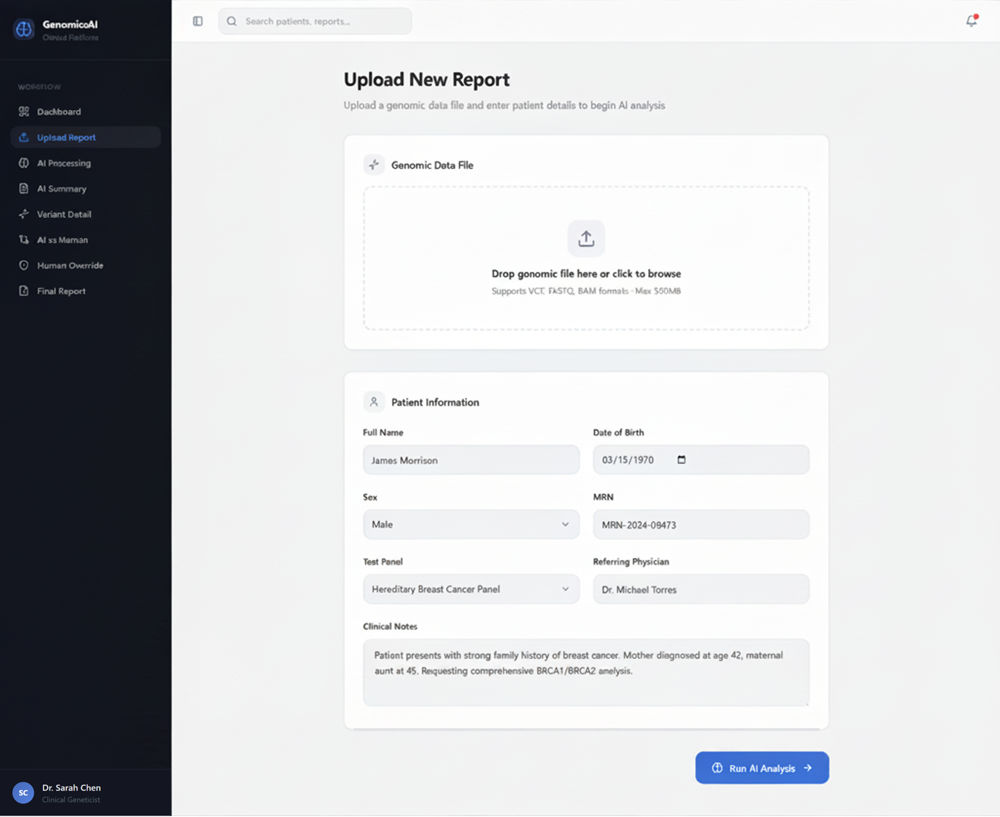
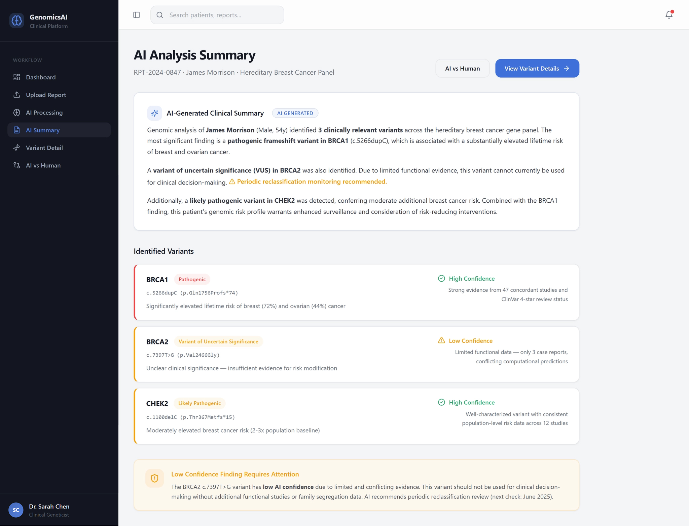
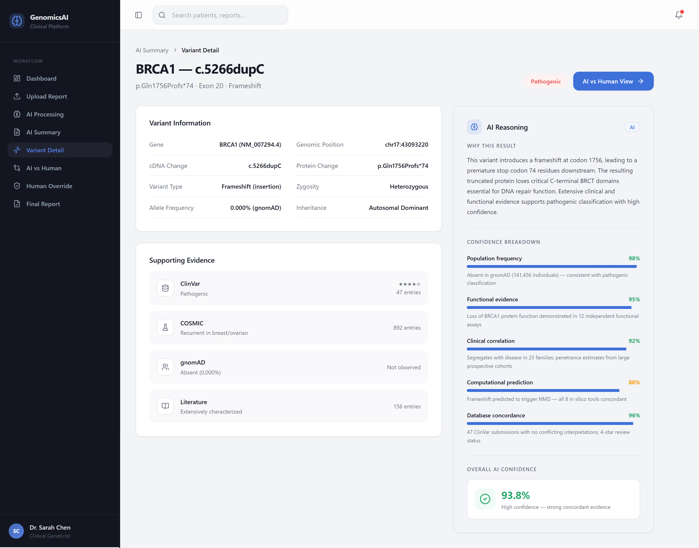
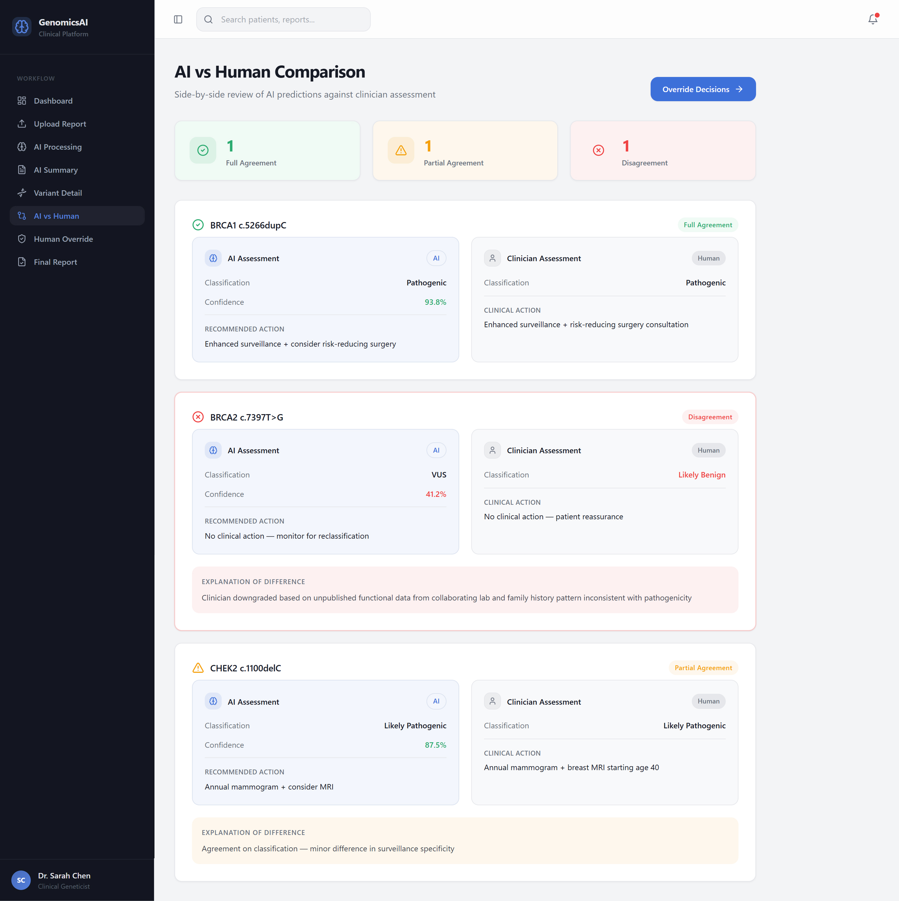
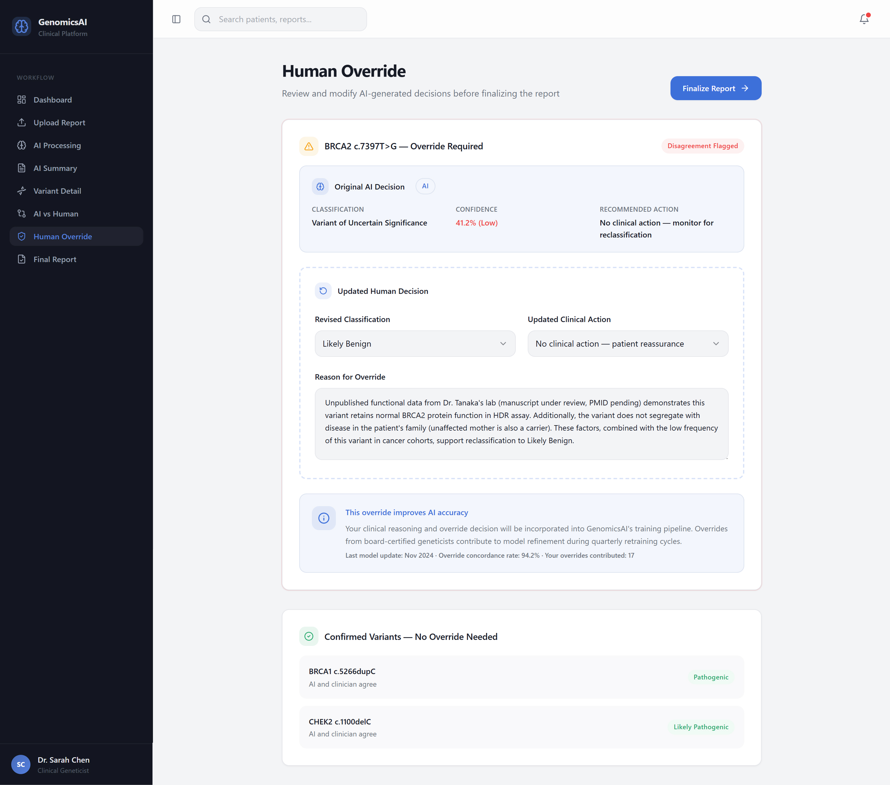
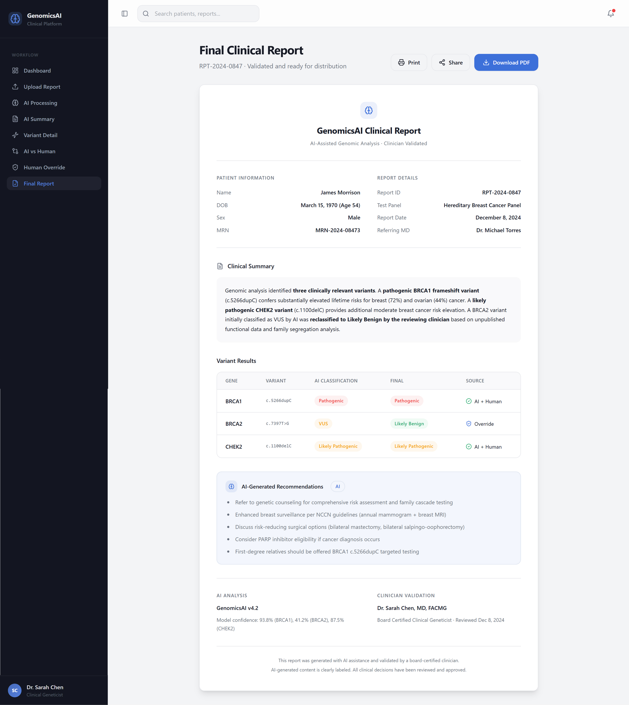

Clinical Report
Intelligence Platform
Designing an AI decision-support layer that clinicians actually trust — by making reasoning visible, not hidden.
In clinical genomics, the challenge is not access to data — it is decision-making. Reports are dense, decisions are high-stakes. Raw data increases cognitive load. AI outputs without transparency reduce trust. This creates a gap between information and action.

The challenge is not data access.
It is decision-making.
In clinical genomics, reports are dense, decisions are high-stakes, and validation requires cross-referencing multiple sources. Most existing tools either expose raw data or attempt to simplify through AI. Both approaches introduce friction.
Clinicians working with unstructured genomic reports must manually extract signals, prioritise risks, and cross-reference databases — all under time pressure and with patient outcomes at stake.
Systems that deliver AI conclusions without showing reasoning create a different problem: clinicians cannot evaluate the output, so they either over-rely on it or reject it entirely.
Neither raw data nor opaque AI closes this gap. What clinicians need is a system that structures information around how decisions actually get made — iteratively, with evidence, not answers.
Genome analysts and clinicians
working with complex diagnostic data.
This workflow is used by genome analysts and clinicians who process high-volume, high-stakes genomic data. A few consistent patterns shaped every design decision.
Clinicians orient, prioritise, inspect, compare, then act — and often cycle back. Rigid sequences break natural reasoning at the worst moment.
Clinicians do not want an AI to deliver a conclusion. They want evidence they can evaluate and stand behind. Confidence comes from corroboration, not a single metric.
A single percentage score is not enough. Clinicians need to see the basis for an AI assessment — and assess whether the evidence is strong enough to act on.
Regardless of efficiency gains, tools that reduce clinician agency create distrust. The design position: AI as an interpretable assistive layer that supports judgment — never replaces it.
The critical moment is not when AI produces a result.
It is when the user asks: “Do I trust this?”
Most systems do not design for this moment. This became the central design problem.
Every design decision was evaluated against one principle: Does this help the user make a better decision?
The focus remained on: reducing ambiguity, supporting validation, and making system behaviour understandable.
Structured around how
decisions naturally evolve.
The system is structured around how decisions naturally evolve — avoiding rigid workflows and supporting natural reasoning at every stage.
Minimal friction intake. The system orients the clinician to the case before beginning interpretation.
The system processes the report and surfaces key genomic signals, prioritised by risk level.
A structured summary tells the clinician what needs attention first — without requiring them to read the full report.
Clinicians drill into individual variants, reviewing supporting evidence from ClinVar, COSMIC, gnomAD, and literature.
Full AI reasoning is available on demand — signal strength, evidence sources, consistency, and validation gaps.
A dedicated comparison view surfaces where AI and clinician assessments agree, partially agree, or diverge.
Overrides are a first-class action. Clinician reasoning is explicitly captured. AI output remains visible throughout.
Every decision step is traceable in the output. The report is defensible, not just generated.
Orientation and prioritisation
before the clinician reads a word.
The dashboard gives clinicians an immediate case-level view — total reports, pending reviews, AI accuracy, and active patients — with recent cases listed by risk level. The clinician knows what needs attention before opening a single report.



The information architecture reflects real decision patterns: Orientation → What is this case? · Prioritisation → What needs attention? · Inspection → Why is this flagged? · Comparison → Do I agree? · Action → What decision do I make?
Five decisions that define
how trust is built.
Hiding reasoning reduces trust. Showing everything simultaneously increases cognitive load. The system uses progressive disclosure: summary by default, reasoning on demand. Clinicians access the depth they need, when they need it.

A single confidence percentage is not actionable. “87% confident” tells a clinician nothing they can evaluate. Confidence is presented as three readable dimensions: strength of evidence, consistency of signals, and need for additional validation.

AI is positioned as input, not decision. A dedicated comparison layer shows AI interpretation and human interpretation side by side, with differences clearly surfaced. Clinicians evaluate where they agree with the system and where they diverge.

Most AI systems treat overrides as edge cases — buried, requiring extra confirmation, making the user feel like they are correcting the system. This platform treats overrides as a normal, first-class clinical action. AI output remains visible. User decisions are explicit. Reasoning is captured.

User corrections are captured as structured feedback that feeds back into the system’s learning layer. Clinical expertise does not get siloed from the tool that should benefit from it.

Design decisions are also
what you choose not to do.
No step is automated without the clinician understanding what the system did and why. Faster to demo, dangerous in practice.
Low signal strength, conflicting evidence, and validation gaps are displayed — not masked. A confident-looking output built on weak evidence is more dangerous than an honest uncertain one.
A single percentage transfers accountability to a number that cannot hold it. Confidence is multidimensional and presented that way throughout the system.
Clinical reasoning is non-linear. The system supports jumping between orientation, inspection, and comparison without requiring a fixed sequence.
Structure introduced into
a fragmented process.
AI-prioritised risk summaries reduced time spent manually scanning reports before knowing where to focus.
The structured flow — orientation to action — gave clinicians a reproducible process that matched how they already reasoned.
Clinicians who could see AI reasoning and override freely reported higher confidence in the system — not lower. The ability to disagree is the foundation of trust.
What this project
reinforced.
Transparency about what the system does not know builds more trust than projecting false confidence. Hidden uncertainty is a future failure point.
The ability to see reasoning and override freely built trust. Systems that take control away, regardless of accuracy, do not get adopted.
What to explain, how to explain it, and when to surface it is a UX problem. Designers must own this layer — it cannot be delegated to engineering.
Individual screen decisions only make sense in the context of the full decision flow. Designing a single screen well means understanding what comes before and after it.
From designing interfaces
to designing systems that support reasoning.
This project reinforced a shift in approach: from designing interfaces, to designing systems that support reasoning, judgment, and accountability.
AI should not replace expertise.
It should make expertise more effective.